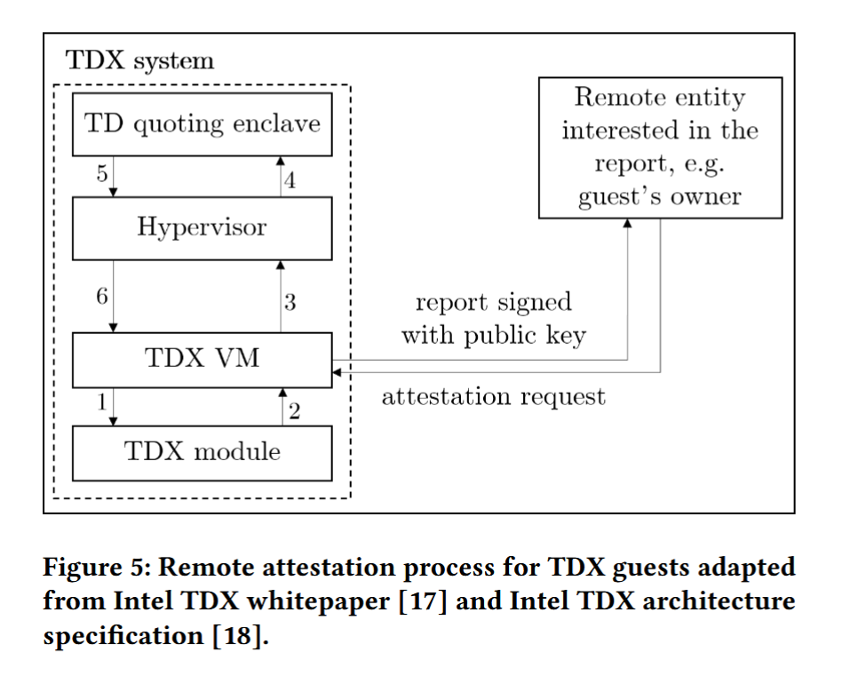

《General overview of AMD SEV-SNP and Intel TDX》中文翻译
本文为论文《General overview of AMD SEV-SNP and Intel TDX》的中文翻译，翻译工具使用大模型 DeepSeek v3 和通义千问 2.5，经过了本人的核对与校正。由于本人在机密计算领域还处在初学阶段，因此一些专有名词的翻译可能存在问题，欢迎指出。
可信执行环境（TEEs）在安全关键代码的执行上应用越来越普遍。AMD SEV-SNP 和 Intel TDX 是新开发的硬件扩展，旨在为虚拟机提供可信执行的环境。通过提供额外的完整性保证并基于之前的安全扩展，它们使得在云环境中实现不会危及敏感用户数据的机密计算成为可能。本文介绍了用于实现这些重大安全增益的额外组件和流程。
可信计算，AMD SEV-SNP，Intel TDX，安全嵌套分页
介绍
如今，软件公司正越来越多地将其应用程序迁移到云环境中，而不是在本地托管。这可能会对机密用户数据构成风险，因为云服务提供商（CSP）可以直接访问运行潜在安全关键应用程序的硬件。可信执行环境（TEEs）提供了一种安全执行代码的方式，而不会将敏感数据泄露给恶意行为者。此前，TEEs 是通过 Intel SGX 实现的。然而，SGX 的工作原理是将应用程序划分为由安全飞地（enclave）保护的可信部分和正常运行的不可信部分。这降低了开发体验，因为开发人员需要了解安全模型并相应地拆分应用程序，而实现一个安全虚拟机（VM）则无需对应用程序代码进行任何调整。
为了防止信息泄露并保护机密数据，出现了需要关闭虚拟机（VM）访问权限以阻止虚拟机监控程序（hypervisor）访问的需求。AMD 和 Intel 现在基于他们之前的可信计算 CPU 扩展 AMD SEV-ES 和 Intel SGX 进行迭代，以增强虚拟机的完整性保证并最小化可信计算基（TCB）。云服务用户（CSU）能够安全地依赖在云环境中运行的应用程序，充分利用这些新扩展引入的功能。
AMD 安全嵌套分页（Secure Nested Paging, SNP） 和 Intel 信任域扩展（Trust Domain Extensions, TDX） 是两种基于硬件的 CPU 扩展，旨在提高虚拟机内存数据的机密性和完整性。它们建立在早期扩展（如 Intel SGX 和 AMD SEV-SEM）的基础上，这些早期扩展无法提供足够的完整性保证。这些保证通过允许虚拟机限制对其内存页的写访问以及对安全关键 CPU 指令（如 CPUID）的输出进行加密验证来实现。此外，虚拟机现在可以信任由安全关键组件报告的固件版本与实际运行的版本一致，这对于防止利用已修复问题的回滚攻击（rollback attacks）至关重要。
与它们的前身扩展 AMD SEV-ES 和 Intel SGX 类似，AMD SEV-SNP 和 Intel TDX 提供了远程认证（remote attestation）能力。生成的认证报告包括虚拟机的状态以及由虚拟机提供的自定义数据（例如用于验证的公钥），这使得云服务用户（CSUs）能够确认其虚拟机已正确启动并执行。
虽然 AMD SEV-SNP 自 2021 年 3 月以来已适用于所有 AMD EPYC 7003 系列处理器，但 Intel TDX 目前尚未在任何本世代处理器中提供。Linux 内核对 AMD SEV-SNP 和 Intel TDX 的支持于 2022 年 7 月发布的 5.19 版本中引入，并且由于架构相似性，两者共享了一些新添加的代码。
背景
在本节中，将介绍先前的虚拟机扩展及其功能。此外，由于内存完整性的重要性，还将介绍现代计算机系统中内存访问的过程。
虚拟机 CPU 扩展的历史
此前，AMD 和 Intel 开发了多种 CPU 扩展，以支持更可靠且性能更好的虚拟机。其中包括 AMD-V 嵌套分页（Nested Pagint, NP） 和 Intel 扩展页表（Extended Page Table, EPT），它们通过硬件加速的嵌套分页取代了性能较差的基于软件的页虚拟化。
通过 AMD 安全内存加密（Secure Memory Encryption, SME），为通用计算提供内存加密，以及 AMD 安全加密虚拟化（Secure Encrypted Virtualization, SEV），将 SME 引入由 AMD-V 嵌套分页加速的虚拟机，从而实现了更高的机密性保证。所需的内存加密密钥由集成的低功耗 AMD 安全（协）处理器（AMD SP） 处理，以进一步减少可信组件的数量。目前，Intel 处理器尚未提供硬件辅助的虚拟机内存加密功能，但这将在即将推出的 Intel TDX 扩展中涵盖。虽然 SGX 可以用于虚拟机中以保护虚拟化应用程序（vSGX），但这并不理想，因为一旦为虚拟机启用 SGX，某些虚拟机功能将不可用（例如虚拟机挂起/恢复、快照等）。AMD 还通过引入 AMD SEV-ES（Encrypted State）对其 AMD SEV 扩展进行了迭代，该扩展在虚拟机终止时加密虚拟机的寄存器状态。由于 AMD SEV-ES 已经为虚拟机的寄存器内容提供了完整性保证，因此在 AMD SEV-SNP 中不需要额外的硬件支持来处理虚拟机的状态。
本世代的处理器会向（恶意的）虚拟机管理器（VMM）提供虚拟机内存的加密内容（通过依赖 SEV），但它们不会阻止对虚拟机内存页的写访问。这使得上述恶意虚拟机监控程序（hypervisor）能够破坏虚拟机的状态，并带来各种重放攻击（replay attacks）的风险。重放攻击是一种攻击向量，恶意行为者在某一时刻获取密文，并在稍后的时间点用这些数据替换未受保护的内存。
CPU 能力自我报告和安全敏感寄存器
现代处理器为运行中的系统提供了多种方式来收集有关当前 CPU 的信息。这主要通过调用 CPUID 指令来实现，该指令报告 CPU 可用的硬件扩展、寄存器大小以及其他一些配置细节。虽然虚拟机监控程序（VMM）通常会模拟和调整该指令的输出，以简化虚拟机迁移并限制虚拟机的功能，但这也可能被恶意虚拟机监控程序滥用。尽管此类干扰在大多数情况下只会导致虚拟机的拒绝服务（denial-of-service），但当报告了错误的扩展保存区域（x86 中包含的）值时，也可能导致缓冲区溢出。特定于处理器模型的寄存器（MSR）是处理器使用的各种控制寄存器，用于提供硬件调试功能、性能监控/跟踪数据以及有关可用 CPU 功能的附加信息。虚拟机监控程序可以不受限制地访问这些寄存器，从而可能对虚拟机的执行进行不必要的干预，例如强制调试断点以中断虚拟机的控制流。同样，硬件扩展所使用的 CPU 微代码补丁级别和 CPU 组件的固件版本也可以从软件中查询。如果信任域（TD）不能依赖安全关键硬件组件运行某个预定的版本，就无法保证上述组件中先前已解决的问题和漏洞不会被利用。
威胁模型
早期 CPU 扩展（例如 AMD SEV 和 AMD SEV-ES）所依赖的威胁模型包含更多需要信任的组件。这是由于缺乏内存完整性保证，使得恶意实体能够篡改虚拟机的内存。由于 SEV-SNP 和 TDX 防止了这种情况，因此以前被认为可信的组件（例如虚拟机监控程序、具有直接内存访问（DMA）能力的 PCI 设备）现在可以安全地假定为不可信。
分页
在典型的 x86_64 系统中，内存是通过页（page）来访问的。分页（paging）用于为每个进程模拟一个完整的虚拟地址空间，而不需要在计算机上实际拥有那么多的内存。它通常还用于页级内存保护，为每个进程提供自己的一组页。因此，用户空间进程无法读取或写入属于其他进程或系统内核的页。分页功能由内存管理单元（MMU）处理，它将应用程序使用的虚拟地址转换为硬件可用的实际物理地址。地址通过将其拆分为不同部分来映射到页。通常，最高有效位对应于页目录项（page directory entry），接下来的位表示页表项（page table entry），剩余的位包含页内的偏移量以及由操作系统设置的各种标志（例如读/写/执行启用）。AMD SEV 允许客户虚拟机使用虚拟机特定的加密密钥选择性地保护和加密内存页，从而限制来自外部源（如虚拟机监控程序）的读取访问。Intel SGX 则采用类似的内存加密方式以单个应用程序为单位来进行加密。
架构
SEV-SNP 和 TDX 利用多种硬件技术为虚拟机提供更安全的可信执行环境（TEE）。下文将描述如何实现这一点以及在此过程中涉及哪些组件。
安全关键组件
SEV-SNP 和 TDX 所实现的架构改进是通过引入新创建的 CPU 集成组件和模块来实现的。其中 AMD 的 SEV-SNP 实现依赖于 CPU 内置的安全处理器来为虚拟机提供安全环境，而 Intel TDX 使用了一种多组件架构，包括以下部分：
- Intel TDX 模块提供了一种管理 TD 的安全方法，并强制执行各种安全策略。
- Intel 认证代码模块，用于在受保护内存中加载和验证 TDX 模块。
- 使用 Intel SGX 创建的 TD Quoting enclave（TDQE）用于远程证明。
这些组件提供了虚拟机监控程序（hypervisor）创建和配置虚拟机所需的管理接口，并负责拦截针对受 SEV-SNP 或 TDX 保护的虚拟机的任何攻击。与 AMD 的安全处理器（SP）的通信通过一种新的虚拟机管理 API 接口实现，而 Intel 则依赖于额外的 CPU 指令。由于这些组件的数据结构具有安全关键性，外部参与者（例如系统上运行的软件或支持 DMA 的设备）无法访问这些数据结构。这些数据结构包含 CPU 集成安全模块所需的管理信息。例如，SEV-SNP 提供的加密虚拟机保存区域（Virtual Machine Save Area, VMSA），或由使用 TDX 的虚拟机监控程序为每个信任域（TD）发布的虚拟机控制结构（Virtual Machine Control Structure, VMCS）。
内存完整性保护
内存完整性保护是 AMD SEV-SNP 和 Intel TDX 引入的主要改进之一。SEV-SNP 和 TDX 都建立了共享（未加密）和私有（加密）内存页之间的分离。一个页是共享还是私有由虚拟地址的最高有效位指示，并在页表遍历（page table walk）中进行验证。共享页仍然可以使用虚拟机监控程序对应的密钥进行加密，但从虚拟机的角度来看，应将其视为不可信。私有（客户）页始终使用虚拟机特定的密钥进行加密，使得外部观察者无法读取内存内容。
AMD SEV-SNP
AMD SEV-SNP 实现内存完整性改进的核心原则是确保分配了私有内存页的虚拟机始终能够读取它写入这些页的最后一个内存值。SEV-SNP 不仅为常规的内存读写保证了这种行为，还确保了在内存页被交换到持久存储或整个虚拟机迁移到另一台主机时也能保持这种一致性。因此，依赖于用先前读取的密文替换虚拟机内存的重放攻击，以及通过向内存页写入无关数据来破坏虚拟机内存的拒绝服务攻击，都不再可能实现。
这是通过添加一个在系统范围内共享的反向映射表（Reverse Map Table, RMP）数据结构来实现的，该表跟踪可以分配给虚拟机的每个页的所有者。对于启用了 SNP 的虚拟机所拥有页的 RMP 条目，它还保存了该页应映射到的客户物理地址（gPA）。此外，每个 RMP 条目包含一个验证位，该位在为虚拟机创建页之前被清零。每当对 SNP-VM 的页执行内存写访问时（无论是虚拟机监控程序还是虚拟机本身），都会执行 RMP 检查，以确保只有拥有该页的实体才能修改它。来自外部参与者（例如虚拟机监控程序或其他客户）的内存读取访问不需要使用 RMP 进行验证，因为私有页的内存始终使用虚拟机的特定私钥进行加密。
只要访问的页不属于启用了 SEV-SNP 的客户虚拟机，虚拟机监控程序的页表遍历就不会受到 RMP 的影响。如果恶意虚拟机监控程序试图覆盖此类页的内存内容，页表遍历将导致页错误（#PF），并且目标页不会受到影响。RMP 检查在常规页表遍历结束时执行，其条目使用系统的物理地址进行索引。修改后的页表遍历与图 1 中的相同，但由于没有客户虚拟机参与，因此不需要第一阶段页转换。
对于启用了 SEV-SNP 的虚拟机，页表遍历更加复杂。使用 AMD-V 提供的加速嵌套页表遍历，首先完成客户虚拟地址（gVA）到客户物理地址（gPA），再到主机系统物理地址（sPA）的初始地址转换。随后调用 RMP 检查，验证该页是否：
- 属于虚拟机而非虚拟机监控程序。
- 由发起页表遍历的特定客户虚拟机拥有。
- 映射到正确的客户物理地址（gPA）。
这种带有额外嵌套页表遍历的修改版页表遍历如图 1 所示。有关页表状态的更多信息，请参阅附录部分 A。
如果客户虚拟机正确验证了其私有页，这些内存完整性保证可以防止页重映射攻击。为了确保这些完整性违规行为不可能发生并被 RMP 检查捕获，客户虚拟机必须确保每个客户物理地址（gPA）仅被验证一次。要实现这一点，可以通过在虚拟机启动时执行所有页验证，或者由客户虚拟机跟踪所有先前验证过的 gPA。如果 gPA 和系统物理地址（sPA）之间的单射属性成立，任何由受感染的（恶意的）虚拟机监控程序发起的恶意嵌套页表更改都会导致客户虚拟机在尝试访问重映射的 gPA 时收到虚拟机通信（#VC）异常（因为 RMPUPDATE 会清除验证位）。客户虚拟机应非常谨慎地处理 #VC 异常，因为这是攻击发生的迹象。通常，客户虚拟机会尝试执行任何必要的步骤以保护自己免受恶意虚拟机监控程序的侵害，或者完全终止。
Intel TDX
Intel TDX 提供了与 AMD SEV-SNP 类似的内存完整性功能。CPU 内置的 TDX 模块为虚拟机监控程序提供了一个间接管理虚拟机的接口，并提供了新的指令 VMLAUNCH-VMX 和 VMRESUME 用于启动和恢复虚拟机。与在系统范围内跟踪每个内存页的所有者不同，TDX 依赖于为虚拟机监控程序维护一个共享的扩展页表（EPT），并为每个虚拟机（Intel 称之为 TD）维护多个私有的扩展页表。由于这些固有的架构差异，从 TD 内部发起的页表遍历（PTW）与 SEV-SNP 使用的页表遍历有很大不同。如图 2 所示，采用 TDX 的系统通过为给定地址选择适当的扩展页表（EPT）来解析客户虚拟地址（gVA）。
私有扩展页表（EPT）的初始化由 Intel TDX 模块处理，该模块将虚拟机监控程序提供的内存页转换为 TD 所需的私有页。页的完整性保护与 SEV-SNP 类似。然而，与依赖客户虚拟机自行验证其私有页不同，Intel TDX 确保页与其关联的客户物理地址（gPA）的映射在 TD 内部以及跨 TD 边界是唯一的，以避免任何与内存混叠（momory aliasing）相关的漏洞。通过为每个缓存行包含一个 1 位的 TD 标识符，以及可选的 28 位消息认证码（Message Authentication Code, MAC）（其中包含 1 位标识符）来区分共享内存和私有内存，从而确保检测到任何未经授权的内存更改。如果攻击者尝试写入由 TDX 模块保护的页，则下次 TD 尝试从受影响的内存读取时会发生 MAC 验证失败。如果使用不带加密 MAC 的逻辑完整性模式（logical-integrity-mode），此类读取访问将导致 TD 所有权检查失败。与 AMD 的实现不同，客户虚拟机对这些失败的处理方式没有影响，它们将被 TDX 模块终止。由于这些完整性违规行为导致的客户虚拟机强制终止不会影响虚拟机监控程序或其他虚拟机。
特权级和访问控制
AMD SEV-SNP 和 Intel TDX 依赖于不同种类的特权级别来实现其完整性保证。
AMD SEV-SNP 的特权概念
由于默认情况下不再允许虚拟机监控程序修改启用了 SEV-SNP 的虚拟机的状态或内存，安全处理器（SP）需要评估这些请求。这些操作可能包括标准的虚拟机管理命令，例如启动、恢复、挂起和终止虚拟机，它们以前完全由虚拟机监控程序处理。安全处理器还使用为启动认证过程的虚拟机提供的适当密钥，执行远程证明（remote attestation）和引用（quoting）功能。
除了将安全敏感操作转移到安全处理器之外，SEV-SNP 还支持四个额外的可选虚拟机特权级别（Virtual Machine Privilege Level, VMPL）。它们从 VMPL0 到 VMPL3 编号，其中 VMPL0 表示最高访问权限，VMPL3 表示最低访问权限。这些特权级别可用于进一步划分由 RMP 提供的新访问控制，例如在启用了 SEV-SNP 的客户虚拟机中启用硬件辅助的地址空间隔离。分配给客户虚拟机的每个虚拟 CPU（vCPU）在一个 VMPL 中运行，每个 VMPL 只能授予与其当前拥有的权限相当的权限。这是通过调用 RMPADJUST 指令来实现的，该指令相应地更新必要的 RMP 条目。使用 PVALIDATE 进行的初始页验证仅向 VMPL0 授予完整的读、写和执行权限。在嵌套页表遍历期间执行的页表权限检查的限制性意味着，多个页权限需要相等，才能使客户虚拟机访问该页。因此，页权限验证在客户管理的页表和由 AMD-V 提供的虚拟机监控程序管理的嵌套页表中处理，同时还通过由更高特权的 VMPL 管理的 RMP 表进行验证。
利用这些不同 VMPL 提供的更细粒度的访问控制，SEV-SNP 客户虚拟机可以创建更具限制性的模拟环境。以前由虚拟机监控程序处理的 APIC 虚拟化可以由在 VMPL0 中运行的软件执行，并将结果传递给在客户虚拟机内部运行的较低特权 VMPL。进一步的任务可以委托给以最高特权级别执行的中间层，例如处理在其他 vCPU 中发生的 #VC 异常，从而提供额外的能力以支持客户虚拟机内部不了解 SEV-SNP 的软件。结合 VMPL 提供的所有这些功能，可以在包含 VMPL0 中间代码的 SEV-SNP 客户虚拟机中嵌套传统（非 SEV-SNP）虚拟机。尽管由于这种转换执行的额外模拟会导致性能略有下降，但它可以使传统工作负载安全运行。图 3 概述了这种架构。
访问控制所需的 Intel TDX 组件
由于 Intel TDX 采用多组件架构，虚拟机管理和通信涉及更多步骤。Intel TDX 模块托管在由 CPU 的安全仲裁模式（Secure-Arbitration Mode, SEAM）保护的环境中，分配了尽可能多的保留内存，相关信息在 SEAM 范围寄存器（SEAM-range-register, SEAMRR）中进行配置。SEAM 内存的机密性和完整性保证与 Intel TDX 保护的虚拟机类似。禁止任何外部参与者（例如所有软件，无论其是在虚拟机还是虚拟机监控程序中运行）或支持 DMA 的设备访问 SEAM 内存。然而，SEAM 模式下的 CPU 并不完全具有特权，因为它不允许访问其他安全内存区域，例如 Intel SGX 飞地或 CPU 的系统管理模式使用的内存区域。
TDX 模块的安装和加载是由新引入的 SEAM 加载器（SEAM Loader, SEAMLDR）执行的，它是集成到 Intel 可信执行技术（Trusted Execution Technology, TXT）堆栈中的一个额外的认证代码模块（Authenticated Code Module, ACM）。在被虚拟机监控程序调用后，SEAMLDR 负责验证并随后将 Intel TDX 模块加载到前述的 SEAM 内存范围（SEAM memory range, SEAMMR）中。此外，SEAMLDR 通过 SEAMMR 内的硬件测量寄存器传递安全版本号（Security-Version Number, SVN），并将 TDX 模块置于 SEAM-VMX 根模式。在此初始化过程之后，VMM 可以通过执行 SEAMCALL 指令与 TDX 模块通信并移交控制权。TDX 模块使用 SEAMRET 指令将执行返回给虚拟机监控程序，确保请求的操作（例如 TD 的创建、删除或启动）得以完成。启动或恢复虚拟机是通过 VMLAUNCH 和 VMRESUME 指令实现的，这些指令在将控制权移交给 TD 之前，将 TDX 模块置于 SEAMVMX 非根操作模式中。
与 AMD 的单一模块架构不同，远程证明是由一个独立的 SGX TDQE 处理的。
安全能力报告
正如在第 2.2 小节中提到的，虚拟机监控程序（VMM）能够控制通过 CPUID 提供的信息或使用 RDMSR 从 MSR 读取的信息，这样会带来一些问题。SEV-SNP 和 TDX 旨在防止虚拟机监控程序向虚拟机提供通过上述指令检索到的错误的 CPU 能力信息。
启用了 SEV-SNP 的客户机可以指示 AMD 的安全处理器（SP）验证通过虚拟机监控程序传递的 CPUID 数据中是否包含主机上不可用的功能，以及关键的安全尺寸信息是否正确。这种过滤可以在每次调用 CPUID 时动态执行，也可以在初始虚拟机启动时执行。如果选择在启动时处理，SP 会在客户机内存中插入两个特殊页面。其中一个页面包含客户机与 SP 之间通信所用的加密密钥，而另一个页面则保存已验证的 CPUID 值。前者通过客户机的私有内存加密密钥进行安全加密，以防止虚拟机监控程序进行任何不必要的访问。由于验证过程仅在虚拟机启动时执行一次，而并非是每次调用 CPUID 时都进行，因此这是一种性能更优的解决方案。
在使用 Intel TDX 的客户机上，默认情况下会进行 CPUID 验证，无需显式配置。类似于 SEV-SNP，TDX 模块防止虚拟机监控程序报告超出主机系统实际支持的能力。然而，TDX 客户机可以在每次执行 CPUID 时无条件地启用虚拟化异常，从而使虚拟机的操作系统完全控制虚拟机内部软件接收请求 CPUID 信息的方式。
SEV-SNP 和 TDX 都通过禁止虚拟机监控程序写入这些对安全性敏感的寄存器，来防止对客户机的 MSRs（例如硬件调试寄存器）的干扰。这一过程是自动处理的，不需要对客户机的操作系统进行任何修改。
TCB 回滚预防
回滚攻击（rollback attacks）依赖于将可信计算基（Trusted Computing Base, TCB）中包含的组件版本降级，或者恶意报告组件的旧版本，然后利用在最近版本中已经修复的漏洞进行攻击。
在 SEV-SNP 系统中，安全处理器（SP）确保其固件不会降级到当前运行版本以下。此外，每个 TCB 组件（如 SP）的固件版本通过加密方式与处理器中集成的芯片背书密钥（Chip Endorsment Key, CEK）合并。由于这些改进，客户机所有者现在可以可靠地相信，他们的虚拟机不会以低于他们预先设置的最低版本阈值的错误报告过的固件版本启动。
由 TDX 模块管理的 TCB 只有在其中包含的每个组件报告的安全版本号（SVN）都高于组件开发者设定的阈值时，才被认为是最新的。这些 SVN 从硬件寄存器加载到由 SEAM 加载器管理的内存中，该内存除了 TDX 模块外任何人都无法访问，从而防止外部参与者进行篡改。因此，如果将此类模块的版本降级到之前设置的版本以下，会导致 TCB 失去其最新状态。如果虚拟机的启动策略要求使用现代 TCB 版本，但当前并未满足此要求，则该虚拟机将无法启动。
中断和异常注入
传统上，虚拟机监控程序可以随时注入中断和异常。通常情况下，这不会对虚拟机造成问题，因为所有主要的虚拟机操作系统都支持正确的中断和异常处理。其中一些虚拟机操作系统包含关于中断和异常如何以及何时发生的内置预设，这是由于虚拟机通常尝试尽可能接近地模拟裸机硬件。客户操作系统可能假设在执行有效指令后不会抛出未知操作码异常（#UD），就像真实硬件一样。然而，虚拟机监控程序可以随时注入这些异常。
为了防止操作系统在处理这些不常见事件时可能出现的尚未发现的问题，AMD SEV-SNP 提供了两种可选配置模式，客户机可以启用这些模式以限制通常未受保护的中断和异常接口。替代注入（alternate injection）提供了默认的虚拟化中断注入和排队（queuing）接口，这些接口通常由虚拟机监控程序使用，但仅允许从虚拟机内部调用。这防止了恶意虚拟机监控程序干扰客户机操作系统，因为用于保存中断信息的字段只能由其他已经能够与客户机数据交互的实体访问。类似于如何使用 VMPL0 作为中间层实现嵌套虚拟化（如 3.3.1 小节所述），中断和异常处理可以通过具有 VMPL0 权限的软件来实现。然而，客户机可能不希望完全阻止虚拟机监控程序注入中断和异常，因此 SEV-SNP 提供了一个称为受限注入（restricted injection）的额外接口。启用了此模式的客户机会完全阻止虚拟机监控程序进行虚拟中断排队，并严格限制可以注入的中断类型。一种新引入的异常——虚拟机监控程序注入异常（#HV），会通知客户机有关虚拟机监控程序的中断，用以代替原本必要的直接传递给虚拟机的中断。虚拟机处理此事件所需的扩展信息可以通过共享内存页面在虚拟机监控程序和客户机之间传递。
Intel TDX 同样在虚拟机控制结构中跟踪虚拟中断信息和 APIC 数据，这些数据受到保护，防止虚拟机监控程序的访问。用于保存这些信息的页面在 TD 启动时使用与虚拟机关联的私钥来获取。Intel VM-X 进行了调整，以防止将异常传递到信任域，因为虚拟中断和注入的中断由 CPU 硬件管理。确保虚拟机操作系统对中断优先级和屏蔽所做的假设也由 TD 的虚拟中断虚拟化处理。所有这些保证都不需要对客户机操作系统进行任何修改。
远程证明
远程证明（remote attestation）是计算服务用户（CSUs）所需的关键功能，因为他们希望验证其部署的虚拟机按照预期运行且未被篡改。证明报告由 CPU 内置组件生成，例如 AMD 系统上的安全处理器（SP）或 Intel 主机上的 TDQE，这些报告包含关于虚拟机本身的多种信息（在启动后和运行期间收集）。先前的扩展仅允许在可信执行环境启动后进行证明，但 SEV-SNP 和 TDX 还支持运行时证明。
证明过程始终由客户虚拟机发起。SEV-SNP 虚拟机通过使用 SNP_GUEST_REQUEST 固件 API 调用请求安全处理器（SP）为其生成报告，而 TDX 客户虚拟机则调用 TDX 模块的 TDCALL 指令。SEV-SNP 客户虚拟机只需与安全处理器通信，而不需要与其他实体交互来处理证明。这与 TDX 信任域（TD）不同，TDX 信任域首先会请求 TDX 模块生成一般证明报告，然后请求虚拟机监控程序（VMM）使用 TDQE 对其进行引用。引用飞地不能由 TDX 模块直接使用，因为它运行在 SGX 飞地中，SEAM 无法访问。通常，这些信息包括在虚拟机启动期间收集的元数据、一般系统信息、安全敏感组件的版本（例如 TDX 模块或安全处理器的固件）以及由信任域（TD）提供的任意数据。在启用了 SEV-SNP 的系统上，客户虚拟机的所有者还可以在启动后签发一个签名的身份块（Identity Block, IDB），以区分客户虚拟机并使用提供的校验和验证启动。TDX 证明报告还包括在证明过程中创建的 TDINFO_STRUCT 中标识 TD 所有者的字段。虚拟机填充的任意数据通常用于向另一方提供虚拟机的公钥，以便以安全的方式进行通信。云服务用户（CSU）可以信任证明报告是正确生成的，因为报告中包含了参与证明的每个组件的版本以及安全敏感的 CPU 功能（例如同步多线程、SEM）的状态。报告使用每个执行 SEV-SNP 证明的 AMD 芯片独有的版本化芯片背书密钥（VCEK）签名，或者依赖于 Intel TDX 客户虚拟机的供应认证飞地（Provisioning Certification Enclave, PCE）提供的签名密钥。随后，请求认证的一方可以通过使用公司提供的签名验证报告来验证这些报告。图 4 概述了为 SEV-SNP 客户虚拟机生成和传输证明报告的过程。
由于上述 TDX 的多组件架构，成功传输证明报告需要更多步骤，如图 5 所示。首先，TDX 虚拟机要求 TDX 模块生成证明报告（图 5.1），类似于 SEV-SNP 客户虚拟机从安全处理器（SP）请求报告。使用这个新创建的报告（图 5.2），TD 将其传递给虚拟机监控程序以进行签名过程（图 5.3）。虚拟机监控程序将认证数据传递给 TDQE（图 5.4），TDQE 负责对报告进行加密验证。随后，签名后的信息被传递回虚拟机监控程序（图 5.5）和信任域（图 5.6），最终将报告传递回远程方。

虚拟机迁移和密封
由于信任域可能希望在虚拟机执行之间保存数据，SEV-SNP 和 TDX 提供了将数据安全写入持久化存储的方法。SEV-SNP 客户虚拟机可以简单地请求安全处理器（SP）生成本地密封密钥，虚拟机可以信任这些密钥未被恶意行为者篡改，并使用它们来加密不受 SEV-SNP 内存保护的数据。
SEV-SNP 引入了一个新的 CPU 组件，称为迁移代理（Migration Agent, MA），用于执行客户虚拟机迁移。该代理在同一个主机上的 SEV-SNP 虚拟机内运行，负责验证迁移是否可以安全执行。由于该代理在每个系统上都是活动的，因此需要在客户虚拟机应迁移离开的源物理机和应迁移到的目标机器上运行。TDX 也使用称为迁移信任域（MigTD）的特定服务信任域进行机密虚拟机迁移，该域以类似于 AMD 的 MA 的安全方式处理迁移过程。几乎所有现代云服务提供商（CSP）都支持（运行中的）虚拟机迁移，以简化维护工作并实现动态负载均衡。实时迁移由在两个系统上运行的代理管理，这些代理处理从源到目标的数据重新加密。客户虚拟机需要确保其静态数据（例如不在内存中的数据）通过其他方式（如全盘加密）进行加密，因为 TDX 和 SEV-SNP 都不处理此类数据的保护。
相关工作
虽然 SEV-SNP 引入的完整性保证解决了前一代 SEV-ES 扩展中的很多问题，但新的针对于 SEV-SNP 系统的攻击向量已经出现。通过故障注入（fault injection）漏洞攻击 SP，可以提取 SEV-SNP 密钥并解密私有的内存。由于这严重影响了远程证明过程，因此在当前一代 AMD 处理器上无法依赖它来安全地创建报告。此外，还可能存在侧信道攻击（side channel attacks），因为 SEV-SNP 并不阻止对（加密的）虚拟机私有页面的读取访问，这些访问可以用于泄露客户机寄存器值或用于恢复密钥。目前还没有已知的针对 Intel TDX 的漏洞，因为尚未存在实现该技术的硬件。
对在可信执行环境（TEE）中运行应用程序且无需修改这些应用程序的高需求，也促使了 Gramine 和 Secure CONtainer Environment（SCONE）的创建。两者都通过依赖 SGX 飞地来提供安全环境，利用其机密性保证。Gramine 是一个库操作系统（LibOS），它可以封装一个应用程序，同时保持较低的内存占用，并处理应用程序可能需要的所有操作系统功能。SCONE 允许应用程序在安全的 Docker 容器内运行，并通过提供一个 C 库来保证 TCB（可信计算基）较小。
IBM 正在为基于 Power ISA 的计算机提供类似的完整性保证，这些保证由 SEV-SNP 和 TDX 确保，使用一种称为保护执行设施（protected execution facility）的基于虚拟机的 TEE。该功能在自 2017 年起可用的 IBM POWER9 芯片上得到支持，并增强了访问控制限制，依赖于多种现有技术，如安全启动和可信平台模块（TPM）。
总结
SEV-SNP 和 TDX 在 SEV-SEM 和 SGX 提供的内存机密性保证的基础上，通过强制执行额外的完整性保证，进一步增强了安全性。之所以要转为在基于虚拟机的可信执行环境（TEE）中运行应用程序，在于这减少了开发工作量，因为无需对应用程序代码进行调整。这些新技术允许在由外部参与者管理的系统上安全处理敏感用户数据，这是在云中推动可信执行环境的持续努力中的一个重要里程碑。
附录
页表状态
在 RMP 中跟踪的所有页面都使用页面状态属性进行分类。页面只能处于表 1 所示的以下状态之一。
处于虚拟机监控程序状态的页面对应于前述的共享（未加密）页面，这些页面可以由虚拟机监控程序或 SEV-SNP 虚拟机自由访问。分配给 SEV-SNP 虚拟机并已由客户机成功验证的页面被标记为 Guest-Valid 状态，这些页面被视为私有页面。通过调用新的 CPU 指令（如 PVALIDATE 或 RMPUPDATE）或使用 AMD 安全处理器中包含的虚拟机管理 API，可以在不同状态之间进行转换。PVALIDATE 指令在客户机内部使用，将页面从 Guest-Invalid 状态移动到 Guest-Valid 状态，并在过程中对其进行验证。这通常是在客户机接收到使用 RMPUPDATE 指令分配的页面后完成的，因为 RMPUPDATE 会清除验证位，将页面标记为不受信任。使用 RMPUPDATE 指令可以从虚拟机监控程序向启用 SEV-SNP 的客户机分配页面，或者从客户机返回给虚拟机监控程序。直接从软件修改 RMP 是被禁止的，只有通过 AMD 安全处理器才能实现，这对于内存访问控制至关重要。
将页面转变为 Metadata、Firmware 或 Context 状态需要调用 AMD 安全处理器的管理 API，这会使页面变为不可变（immutable）状态，并将其配置为请求的状态。
开发经验
要开发利用 SEV-SNP 和 TDX 新引入的功能的软件，需要一个稳定的函数和指令规范以及支持这些扩展的硬件。虽然 AMD 已经提供了支持 SEV-SNP 的处理器，但 Intel 当前一代芯片仍缺乏任何硬件支持。然而，Intel 已经发布了 TDX 的应用二进制接口（ABI），使开发者能够开始软件的开发。AMD 通过一个 Rust 库提供对安全处理器的 API 访问，该库自 2022 年 10 月起支持 SEV-SNP。利用这些库和工具可以创建虚拟机并与必要的安全组件进行通信。用于验证证明报告的证书由芯片制造商发布，并且每一代芯片的证书都是公开可用的。
由于在页表遍历过程中使用的新组件需要对内存写入客户机私有页面进行额外的访问验证，性能可能会下降。实际影响尚未测量，因为 AMD 和 Intel 最近和正在进行的开发工作仍在影响实现细节。之前讨论的 CPU 测量指令（如 CPUID）也因为安全处理器和 TDX 模块提供的额外验证而变得较慢。
 微信
微信 支付宝
支付宝